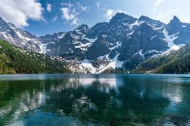
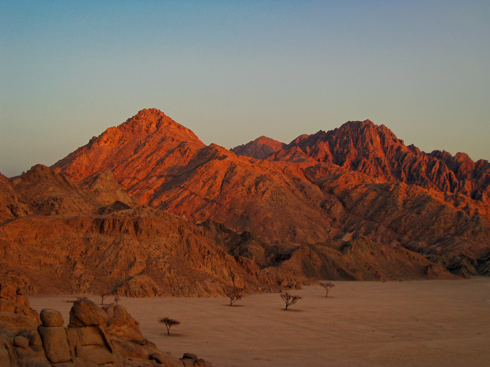

Ongoing Projects
Empirical Evidence on Mafia Corruption and Punishment Mechanisms in Italy
with Giorgio d'Agostino and Stefania Fontana
Work in Progress
Published Research
2026
The Impact of EU Structural Policy on Italian Public Services
Quaderni del CNEL
Forthcoming
2026
NEET: a Social Challenge for Youth and Italy
Casi e materiali di discussione, N. 33, CNEL
Beyond the Desk

Mountain
Planning a Tatra mountain range crossing for summer 2026. Currently training to climb my first 4000m summit in the Italian Alps, in the Monte Rosa massif.

Sail
Gaining experience as an open sea sailor after 20 years of inshore sailing and teaching. Objective: a round trip of the African continent's coasts.

Adventure
Designed a Rome-to-North-Cape walking route in 2019 through Italy, Austria, Germany, Denmark, Sweden, and Norway. Dream: riding the Pan-American road from Prudhoe Bay, AK to Ushuaia, CL.